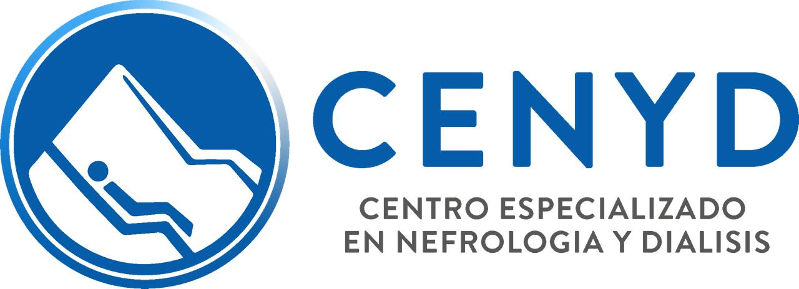

Centro Modelo Hemodiálisis Villa Dolores SRL
ESPECIALIDAD
Es una especialidad médica que se enfoca en los riñones en sus funciones y su estructura. Se centra en la prevención, diagnóstico y tratamiento de las enfermedades del riñón. El médico especialista en nefrología es el Nefrólogo. En ocasiones la nefrología se confunde con la urología debido a la similitud entre ambas, sin embargo la urología se especializa en el sistema urinario masculino y la nefrología abarca mucho más campo anatómico, por ejemplo: Lesión renal aguda o eventos de daño agudo con afectación renal. Nefritis o inflamación renal de distintas causas. Hematuria (sangre en la orina), proteinuria (proteínas en la orina). Biopsia Renal para el diagnóstico de patología primaria renal. Infecciones de orina. Litiasis renal. Nefropatía por hipertensión. Nefropatía diabética. Enfermedades sistémicas o tratamientos que afectan a los riñones. Enfermedad Renal crónica y las consecuencias de su presentación: anemia, ácidosis metabólica, hiperfosfatemia. Tratamiento de soporte renal (diálisis: Hemodiálisis y Diálisis peritoneal). Atención previa, durante y posterior a un Trasplante renal. Realización de accesos en venas para realizar hemodiálisis (catéteres). Técnicas especiales de depuración de la sangre: plasmaféresis.
SINTOMAS


NUESTRO EQUIPO
DOCTORA DIGIUSTO
MP: 39.762 - ME: 20.860 Médico Cirujano UNC. Residente de Nefrología. Hospital Córdoba. Ministerio de Salud. Pcia de Córdoba. Especialista en Nefrología y Medio Interno UNC. Profesor Asistente Cátedra de Medicina I UHMInº3 Hospital Córdoba UNC. Miembro de la Sociedad Argentina de Nefrología. Director General de ATERYM Alta Gracia.
DOCTOR PAZ

Dr. Sergio Boni MP: 23.906 - ME: 8.706 Médico Cirujano UNC. Residente de Nefrología. Hospital Córdoba. Ministerio de Salud. Pcia de Córdoba. Especialista en Nefrología y Medio Interno UNC. Profesor Asistente Cátedra de Medicina I UHMInº3 Hospital Córdoba UNC. Miembro de la Sociedad Argentina de Nefrología. Director General de ATERYM Alta Gracia.